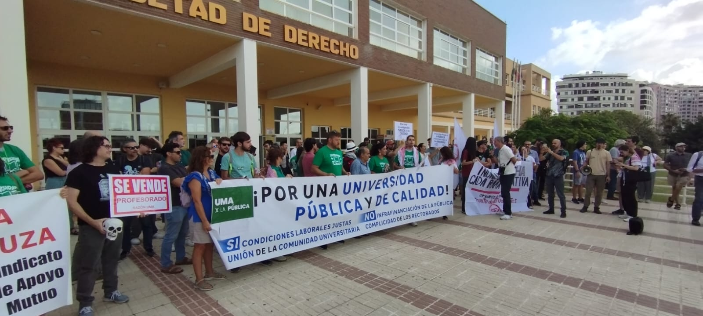
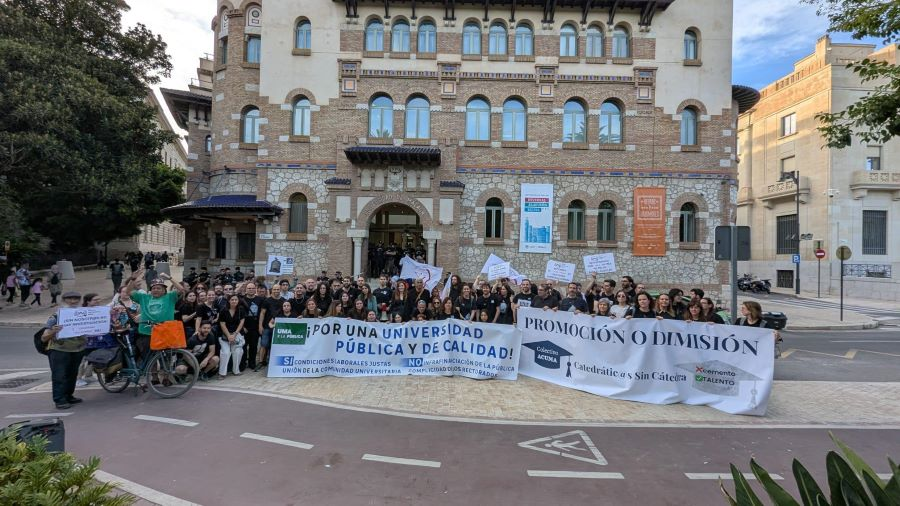
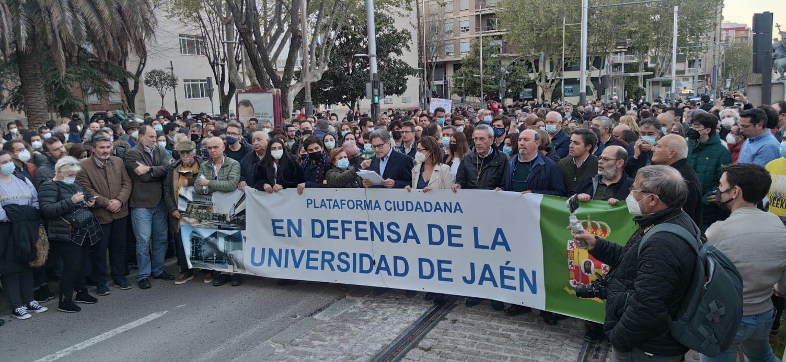

Plataforma de organizaciones estudiantiles, sindicales y sociales de Andalucía
La educación superior es un derecho universal, un motor de igualdad y un pilar democrático irrenunciable
La universidad pública andaluza vive una encrucijada histórica. Frente a quienes quieren convertir el conocimiento en mercancía y el derecho al estudio en privilegio de renta, alzamos una respuesta colectiva.
Nos unimos organizaciones estudiantiles, sindicales, docentes y movimientos sociales de toda Andalucía para proclamar que la educación superior es un derecho universal, un motor de igualdad y un pilar democrático irrenunciable.
La pública es la única garantía de que el talento no dependa del código postal ni de la cuenta corriente. Defender la universidad pública es defender la meritocracia real.
La ciencia pública sostiene los proyectos de largo plazo que el mercado abandona. Sin financiación potente, Andalucía pierde capacidad de transformar su modelo productivo y depender de sus propios saberes.
Frente a la rentabilidad inmediata, defendemos una universidad autónoma que proteja la pluralidad del conocimiento. Sin pensamiento libre, no hay democracia sana.
Nuestra lucha se centra en conseguir que la universidad pública andaluza sea financiada adecuadamente para garantizar una educación de calidad, accesible para todos y todas.
Que la Junta de Andalucía eleve la financiación de las universidades públicas al 1% del PIB andaluz antes de 2030.
La retórica no basta si no va acompañada de recursos. La Ley Orgánica del Sistema Universitario (LOSU) marca una senda obligatoria. La Junta de Andalucía no puede mirar hacia otro lado.
Exigimos que se destine el 1% del PIB andaluz a las universidades públicas en 2030, tal y como obliga la LOSU.
Garantizar que la Ley Orgánica del Sistema Universitario (LOSU) se cumpla realmente con financiación suficiente.
Asegurar que la calidad de la educación no dependa de la capacidad de pago de cada estudiante.
Esta plataforma nace para actuar, no para declarar. Nos comprometemos a:
Por una universidad financiada, democrática y radicalmente pública
Somos una plataforma formada por colectivos estudiantiles, profesorado, personal de administración y servicios de las universidades públicas andaluzas. Nos une la convicción de que la universidad pública es imprescindible para el desarrollo social, cultural y económico de Andalucía.
Creemos que la educación es un derecho fundamental, no una mercancía. Por eso luchamos conjuntamente para exigir a las administraciones que financien adecuadamente nuestras universidades.
¿Representa un colectivo o universidad? Contacta con nosotras para unirte a la plataforma

UMA - 23 de septiembre de 2025
La coordinadora UMA x la Pública se moviliza por una financiación digna para la universidad pública.
Leer en Diario SurUPO - 16 de septiembre de 2025
Protestas en defensa de la educación pública y banderas palestinas en la apertura del curso universitario andaluz.
Leer en Eldiario.es
UMA - 16 de mayo de 2025
Nueva protesta contra los recortes económicos en la Universidad de Málaga.
Leer en Diario SurUMA - 25 de abril de 2025
Los docentes claman contra los recortes en pleno desembarco de universidades privadas.
Leer en Eldiario.es
UJA - 7 de abril de 2022
Más de 500 personas participan en la concentración en defensa de la Universidad de Jaén.
Leer en Europa Press¿Quieres saber más sobre nuestras luchas o unirte a la plataforma? ¡No dudes en contactar!